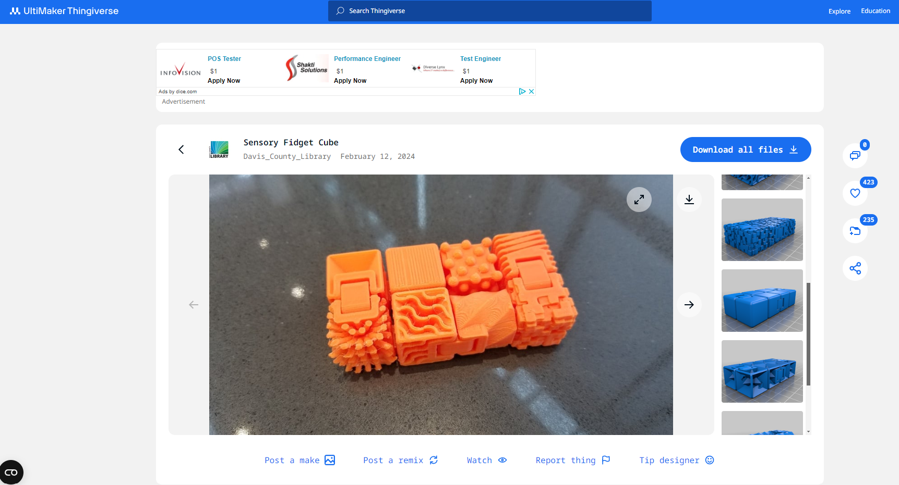
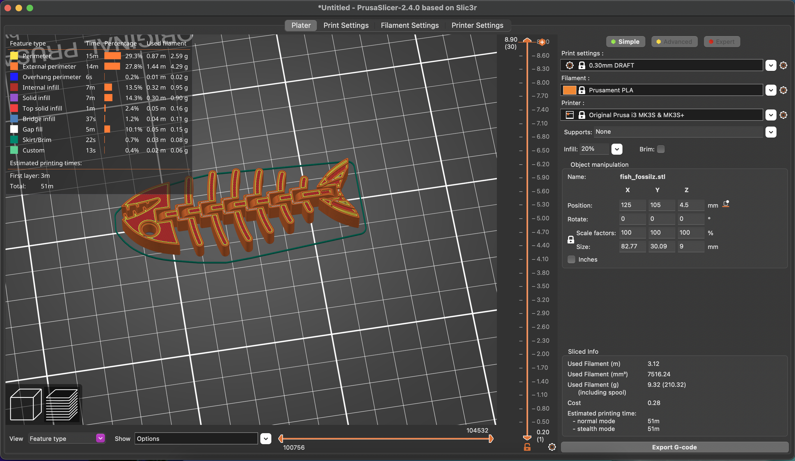

1. Design and print a small object that could not be (easily) made by subtractive methods. Discuss pros and cons of 3D printing this object rather than using other fabrication methods.
2. Prepare your file for printing using PrusaSlicer (or equivalent), and upload your 3D model file (e.g. .f3z), STL file, and sliced gcode file to your documentation.
3. Document progress on a 3D model for your final project.
4. Scan something.
To learn how to use the 3D printers, I first printed a model I found on thingiverse, called Fish Fossilz by muzz64.
Thingiverse page for the model, the sliced model in PrusaSlicer, and the final print - it's wiggly!
Now that I understood how to use the 3D printers, I designed my own part to print. Since I needed to make something that's not easily made with other tools like the laser cutter, I took inspiration from the internal rotating joints of the fish and made a tiny gyroscope.
The model, the printer starting to print it, and the final gyroscope.
I designed the model parametrically so that I could adjust the tolerances. I started with 1mm between each ring and 1mm between the posts and the containing holes. I talked to Gabby, who recommended shrinking the post holes to 0.5mm, which I did. Although I was prepared to print another version if the tolerances didn't work out, it actually worked on the first try. Because the very first layer of each post is completely unsupported, it dripped down a little bit, and I felt some resistance the first time I tried to spin each layer. But after I broke it in, it's spinning nicely.
This close up, you can see the print layers and the distortion on the post.
This object would be extremely difficult to make subtractively. Making the rings would be very easy since they're simple extrusions of 2D circles, but the posts would complicate things. Also, with additive manufacturing, I could print the rotation posts in place rather than having to assemble the rings together.
See my final project page for updates on my final project.
Next up is scanning! This was... difficult. Gabby and I tried to scan several different items using the Sense™ scanner in the lab. The scanner couldn't pick up the fish I had printed even after several tries with different backgrounds. I ended up getting the "best" scan from my water bottle, but it's... not a very good scan. It struggled to pick up the stickers on the sticker-ed side, and struggled with the slightly reflective metallic lip, and struggled with the cap.


So... yeah. it tried.